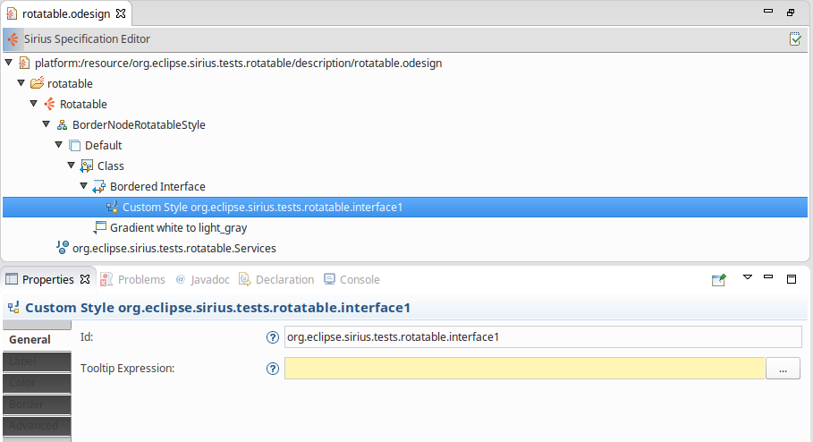

Sirius provides a way to
define custom styles. This extension point allows to use an existing custom style provided by Sirius to enable rotatable images for node mappings.
Two ways:
The rotatable style is available only for node and bordered node mappings.
On a node mapping, the specifier creates a
New Style -> Custom Style.
The
Id field is required and must be filled. This identifier is used to find the corresponding custom style extension point.
Then the specifier must define the rotatable image style, this is done thanks to the
org.eclipse.sirius.rotatableImage.
In this extension, there are two required fields:
/pluginName/folders/imageNameWithExtension. The image can be either SVG or non SVG file.
There a 3 optional parameters in this extension point.
The following example defines a new rotatable image style using four different images.
In the VSM a container with a bordered node is defined, the style of the bordered node use the rotatable style.
The custom style
Id field is set to
org.eclipse.sirius.tests.rotatable.image.

Then in the plugin.xml file, the
org.eclipse.sirius.rotatableimage extension point is defined as following:
<extension
point="org.eclipse.sirius.rotatableimage">
<image
id="org.eclipse.sirius.tests.rotatable.image"
north="/org.eclipse.sirius.tests.rotatable/images/north.svg"
south="/org.eclipse.sirius.tests.rotatable/images/south.svg"
east="/org.eclipse.sirius.tests.rotatable/images/east.svg"
west="/org.eclipse.sirius.tests.rotatable/images/west.svg">
</image>
</extension>
The image
id parameter must contain the same value than the one defined in the VSM :
org.eclipse.sirius.tests.rotatable.image.
The
images folder contains the four different images.